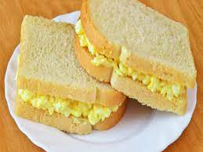

Egg Sandwich

Description
Egg Sandwich is both delicious and healthy meal. It's mostly served for breakfast. But, It can also be eaten at dinner time.
This recipe is filled with both carbohydrate and protein. Therefore, it is essential for daily nutrition. It's also low in fat and sugar. So, It's ideal for losing fat while maintaining weight.
Ingredients
- 1 raw eggs
- 1 teaspoon salt, or to taste
- 5 tablespoons of olive oil
- 2 sliced bread
Steps
- Mix the raw eggs with a teaspoon of salt
- Heat olive oil over high heat in a pan
- Once heated pour the mixture of eggs and salt
- Once the bottom side is fried enough flip it
- Take out the product and sandwich it between two breads
- Serve it and Enjoy!